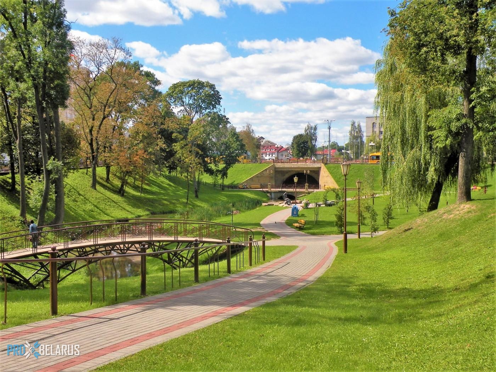

.
Парк Жилибера

Парк имени Жана Эммануэля Жилибера находится в центре города Гродно[1]. Ж.
Э. Жилибер был французским учёным-медиком и просветителем. С помощью
мецената Антония Тизенгауна, он основал первое высшее заведение на
территории Беларуси — Гродненскую медицинскую академию[1]. Также он
является одним из создателей акушерской школы, гродненского госпиталя и
создал ботанический сад. Сад был основан 8 апреля 1775 году[1] и являлся
наглядным учебным пособием в академии. Через три года после основания сада
он считался самым лучшим в Европе и насчитывал 2000 видов растений, многие
из которых были редкими. Когда Жилиберу пришлось покинуть город, уход за
садом перешёл в руки властей города. Они не могли ухаживать за садом как
следует, и парк был заброшен.
Несколько лет спустя его территорию разделили на два сада и один парк. В
1920-е года было решено заново создать на этом месте ботанический сад. В
этот раз опеку взял на себя Ян Кохановский. Сад насчитывал всего 800 видов
различных растений. Ещё одну часть сада преобразовали и украсили бюстом
польской писательницы Элизы Ожешко[1]. Когда наступила Вторая мировая
война, военно-полевой госпиталь хоронил воинов на территории парка. После
окончания Великой Отечественной войны все останки перезахоронили в одной
братской могиле. На этом месте стоит постамент, где зажжён Вечный огонь.
На сегодняшний день парк сильно отличается от своего первого варианта,
заложенного Жаном Жилибером.